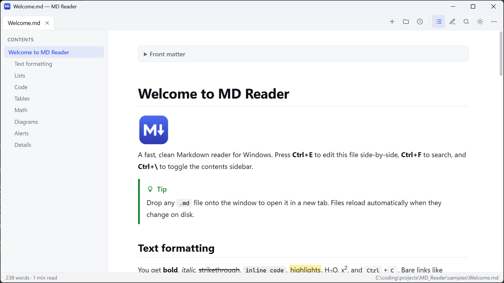

A Markdown reader for Windows
that just works.
Fast, clean and free. Open any .md file and read it the way it was meant to look, with tabs, an outline, code highlighting, math, diagrams and a quick editor when you need it.

Everything you want, nothing you don't
A single small app. No account, no ads, no telemetry. It works fully offline.
Beautiful reading
GitHub-style rendering with tables, task lists, footnotes, alerts and front matter. It follows your Windows light or dark theme.
Tabs & recent files
Open many files at once. Your tabs are restored next time, and double-clicking another file adds a tab instead of a new window.
Table of contents
A clickable outline built from the headings, which highlights where you are as you scroll.
Code, math, diagrams
Syntax highlighting for about 190 languages with a copy button, LaTeX math through KaTeX, and Mermaid flowcharts and sequence diagrams.
Quick edit
Press Ctrl+E for a side-by-side editor with a live preview and synced scrolling. Saving keeps your file's encoding and line endings.
Live reload
If another program changes the file, the page updates on its own. If you also have unsaved edits, it asks which version to keep.
Install in a minute
The installer only sets things up for your own user account, so it doesn't need administrator rights.
-
Download
Get
MDReader-win-x64.zipfrom the latest release. -
Unzip it
Right-click the zip and choose Extract All…. Running the installer from inside the zip won't work.
-
Double-click
install.cmdThis copies MD Reader into
%LOCALAPPDATA%\Programs\MD Reader, adds it to the Start menu, and registers it for.mdfiles. When it finishes, it opens the Windows Default apps page.“Windows protected your PC”? The app isn't code-signed yet, so SmartScreen warns about new downloads. Click More info → Run anyway. You can read every line of the installer ininstall.ps1. -
Make it your default for .md files
Windows doesn't let apps set themselves as the default, so you choose it once:
Right-click any
.mdfile → Open with → Choose another app → pick MD Reader → click Always.Or go to Settings → Apps → Default apps → MD Reader and set
.mdand.markdown.
Requirements
Windows 10 or 11 (64-bit), plus:
• .NET 8 Desktop Runtime (x64). If it's missing, Windows offers to download it the first time you start the app.
• Edge WebView2 Runtime, which Windows 11 already includes.
Portable, no install
Just want the app? Download MDReader.exe and run it from anywhere. Drag .md files onto the window to open them.
Uninstall
Go to Settings → Apps → Installed apps → MD Reader → Uninstall, or run uninstall.cmd from the zip. Your settings are kept in %APPDATA%\MDReader unless you run uninstall.ps1 -Purge.
Update
Download the newest zip and run install.cmd again. It replaces the old version and keeps your settings and open tabs.
Build from source
You'll need the .NET 8 SDK.
git clone https://github.com/Himmatilloxon/md-reader.git
cd md-reader
.\build.ps1 # creates dist\MDReader.exe
.\install.ps1 # optional: install it for your userKeyboard shortcuts
You can do everything from the keyboard.
| Ctrl+O / Ctrl+N | Open / new file |
| Ctrl+S / Ctrl+Shift+S | Save / save as |
| Ctrl+E | Switch between reading and editing |
| Ctrl+\ | Show or hide the table of contents |
| Ctrl+F, F3 / Shift+F3 | Find, next, previous |
| Ctrl+Tab, Ctrl+1…9 | Switch tabs |
| Ctrl+W / Ctrl+Shift+T | Close tab / reopen closed tab |
| Ctrl+R | Reload from disk |
| Ctrl+P | Print or save as PDF |
| Ctrl+= / Ctrl+- / Ctrl+0 | Zoom in / out / reset (or Ctrl+mouse wheel) |
| Ctrl+B / I / K | Bold / italic / link while editing |
FAQ
Is it really free?
Yes. It's open source under the MIT license, with no ads, no account and no tracking. The app never connects to the internet unless a document links to images online.
Is it safe to open Markdown files from strangers?
Yes. HTML inside documents is sanitized, so scripts never run. Clicking a link to a program or script only shows it in File Explorer instead of running it.
Why does SmartScreen warn me?
The exe isn't code-signed, and signing certificates cost money. SmartScreen warns about any new, unsigned download. The source code and the build that produces each release are public. Each release is built by GitHub Actions straight from the source.
Which Markdown features are supported?
CommonMark, plus GitHub tables, task lists, strikethrough, autolinks, footnotes, alerts (> [!NOTE]), <details>, YAML front matter, KaTeX math ($…$, $$…$$, ```math) and Mermaid diagrams (```mermaid).
Where are my settings stored?
In %APPDATA%\MDReader\settings.json: theme, zoom, recent files, open tabs and window position.
I found a bug or want a feature.
Please open an issue. Pull requests are welcome too.